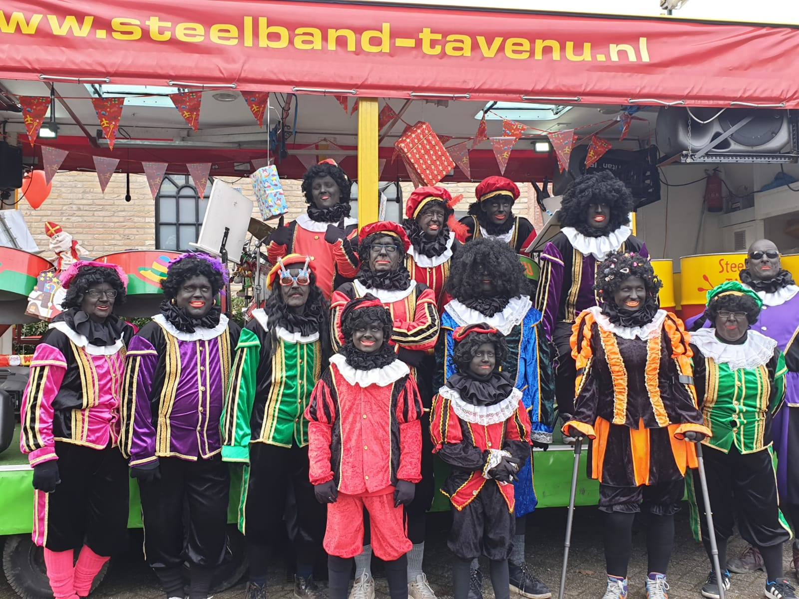
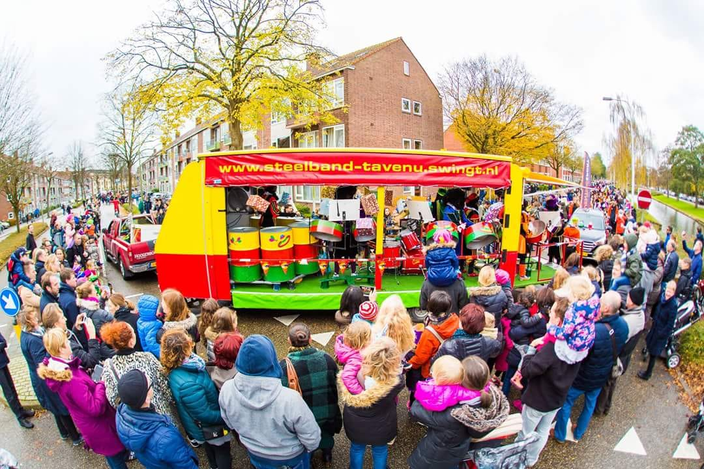

Half november lenen wij onze podiumwagen uit aan Sinterklaas. Zijn Pieten kunnen dan met intochten meerijden en op de steeldrums spelen. Uiteraard hebben zij een aangepast repertoire met Sinterklaasliedjes.
- ideaal voor intochten
- met zwarte pieten
- Sinterklaas repertoire
- eigen geluidsversterking
- hoogte 3.20 meter
- lengte 10 meter